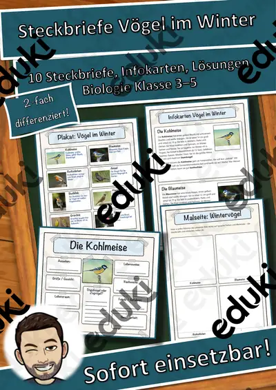
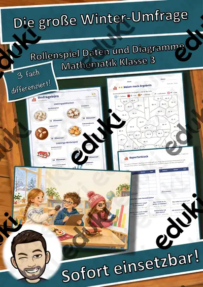
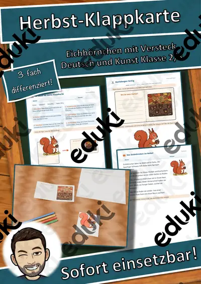
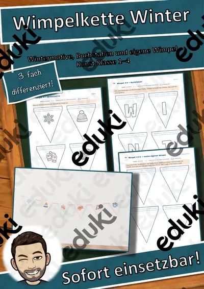
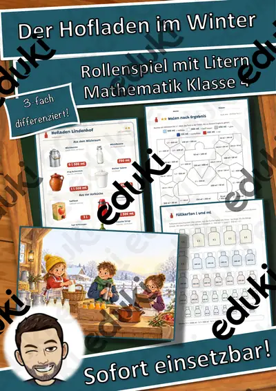
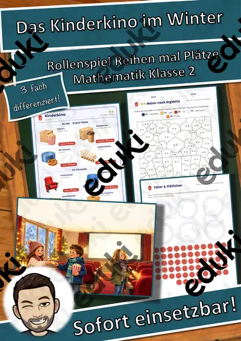
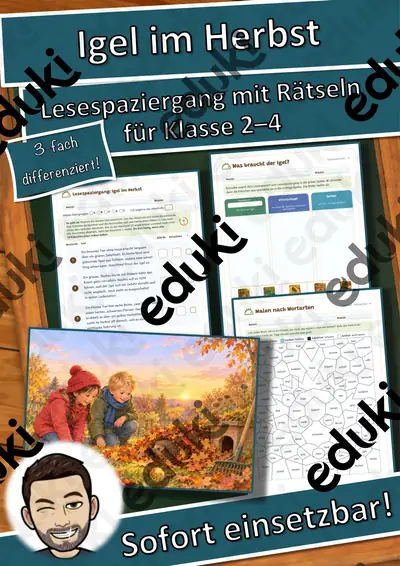
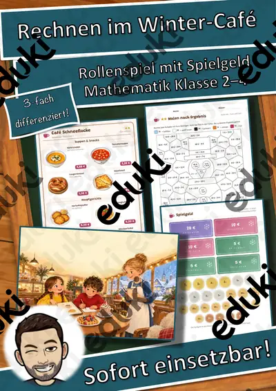
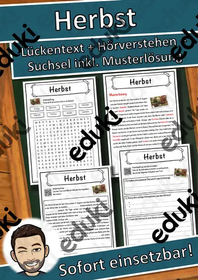

Jahreszeiten: Arbeitsblätter für Klasse 1–4 (Sachunterricht)
Der Jahreslauf strukturiert das Schuljahr: Natur, Feste und Wetter verändern sich, und mit ihnen die Themen im Sachunterricht, im Deutschunterricht und im Kunstunterricht. Kinder lernen Reihenfolgen, Merkmale und Monate kennen.
Im Unterricht begegnen den Lernenden zuerst Frühling und Sommer. Wer weitergeht, behandelt Herbst, Winter, Monate sowie Naturveränderungen.
Im Fach Sachunterricht gehört das Thema nach den Lehrplänen der Länder zum festen Programm, überwiegend in der Grundschule. Die Kinder ordnen Beobachtungen den Jahreszeiten zu und beschreiben Veränderungen in Pflanzen- und Tierwelt.
Wer Jahreszeiten auf mehrere Stunden verteilt, startet mit Frühling, übt an Herbst und schließt mit Monate ab. Alle Blätter sind kopierfertig und enthalten Lösungen für die schnelle Kontrolle. Leistungsstarke und schwächere Lesende erhalten über die Lesespurgeschichten Texte in drei Stufen.
78 passende Materialien stehen bereit, etwa Jahreszeiten-Werkstatt: Ostern: Ausmalbilder, Rechenmosaik Paket Frühling und Sommer: 3 und Rechenmosaik Paket Winter, Advent und Fasching. Vertreten sind 2 Lesespurgeschichten, 4 Rechenwelten, 6 Lesespaziergänge, 6 Bastelvorlagen und 5 Lückentexte mit Hörverstehen; die Stufen reichen über Klasse 1–5. Ein Jahreszeitenbaum im Klassenraum, der alle paar Wochen neu gestaltet wird, macht den Wandel dauerhaft sichtbar.
Das gehört zum Thema
Passende Arbeitsblätter und Materialpakete

Jahreszeiten-Werkstatt: Ostern: Ausmalbilder mit Wörtern – Plus-Paket, Klasse 1–4

Rechenmosaik Paket Frühling und Sommer: 3 Motive, lösen – kleben – ausmalen (Klasse 1–4)

Rechenmosaik Paket Winter, Advent und Fasching: 4 Motive, lösen – kleben – ausmalen (Klasse 1–4)

Rechenmosaik Paket Herbst und St. Martin: 3 Motive, lösen – kleben – ausmalen (Klasse 1–4)

Steckbriefe Vögel im Winter – Materialpaket (10 heimische Wintervögel, differenziert, mit Lösungen)

Lesespaziergang Tiere im Winter: Pit, der Igel, sucht ein Bett – 8 Stationen in 3 Lesestufen mit Hörfassung (Klasse 1–2, DaZ)

3D-Anhänger Sommer – Oktaeder, Diamant und Kugel zum Ausmalen und Basteln, 3-fach differenziert (Klasse 3/4)

3D-Anhänger Frühling – Oktaeder, Diamant und Kugel zum Ausmalen und Basteln, 3-fach differenziert (Klasse 3/4)

3D-Anhänger Herbst – Oktaeder, Diamant und Kugel zum Ausmalen und Basteln, 3-fach differenziert (Klasse 3/4)

3D-Anhänger Winter – Oktaeder, Diamant und Kugel zum Ausmalen und Basteln, 3-fach differenziert (Klasse 3/4)

Die große Winter-Umfrage – Rollenspiel Daten, Tabellen und Säulendiagramme, 3-fach differenziert (Klasse 3)

Herbst-Klappkarte Eichhörnchen – Figurenkarte basteln mit Sachtext, 3-fach differenziert (Tiere im Herbst, Klasse 2/3)

Wimpelkette Winter – Bastelvorlage mit Wintermotiven, Buchstaben WINTER und eigenen Wimpeln, 3-fach differenziert (Klasse 1–4)

Der Hofladen im Winter – Rollenspiel Hohlmaße l und ml, 3-fach differenziert (Klasse 4)

Lesespaziergang: Obst und Gemüse im Winter – 3-fach differenziert (★/★★/★★★), Klasse 2–4

Das Kinderkino im Winter – Rollenspiel Einmaleins und Verteilen, 3-fach differenziert (Klasse 2)

Lesespaziergang: Zugvögel im Herbst – 3-fach differenziert (★/★★/★★★), Klasse 2–4

Lesespaziergang: Blätter und Bäume im Herbst – 3-fach differenziert (★/★★/★★★), Klasse 2–4

Lesespaziergang: Vorräte der Tiere im Herbst – 3-fach differenziert (★/★★/★★★), Klasse 2–4

Lesespaziergang: Igel im Herbst – 3-fach differenziert (★/★★/★★★), Klasse 2–4

Rechnen im Winter-Café – Rollenspiel Rechnen mit Geld, 3-fach differenziert (Klasse 2–4)

Das Winter-Zielwerfen – Lesespurgeschichte mit Rätselaufgaben (Klasse 3)

Fit durch den Winter – Lesespurgeschichte mit Rätselaufgaben (Klasse 3)

Herbst Lückentext mit Wortspeicher Hörverstehen und Suchsel
Weitere 54 Materialien zum Thema im Material-Finder.
Häufige Fragen
Für welche Klassenstufe passen die Arbeitsblätter zu Jahreszeiten?
Passend sind Klasse 1–5. Von den 78 Titeln wenden sich die meisten an Klasse 2, einige lassen sich differenzierend auch in benachbarten Stufen nutzen.
Welche Inhalte decken die Materialien zu Jahreszeiten ab?
Die Materialien arbeiten an Frühling, Sommer und Herbst und gehen dann weiter zu Winter, Monate und Naturveränderungen. Vorab lohnt ein Blick in den Lehrplan des eigenen Bundeslandes.
Wie setze ich Jahreszeiten im Unterricht ein?
Beginnen Sie mit einem Einstieg zu Frühling und ergänzen Sie nach Bedarf. Ein Jahreszeitenbaum im Klassenraum, der alle paar Wochen neu gestaltet wird, macht den Wandel dauerhaft sichtbar.
Mehr Material nach Fach und Klasse
Verwandte Lehrplanthemen
- Basteln, Falten und Werken (Kunst, Klasse 1–6)
- Lesen und Leseverstehen (Deutsch, Klasse 1–6)
- Malen, Zeichnen und Drucken (Kunst, Klasse 1–6)
- Igel und Winterschlaf (Sachunterricht, Klasse 1–4)
- Karneval und Fasching (Sachunterricht, Klasse 1–6)